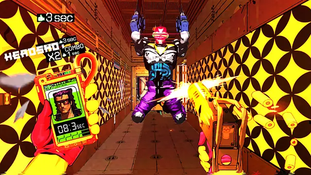
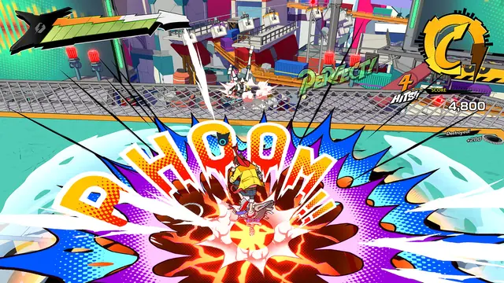
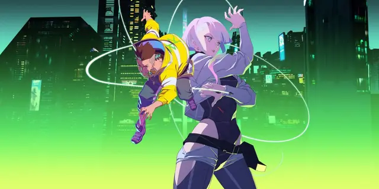
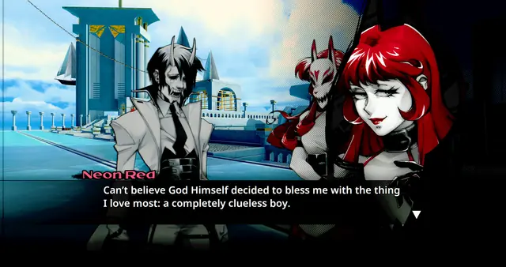
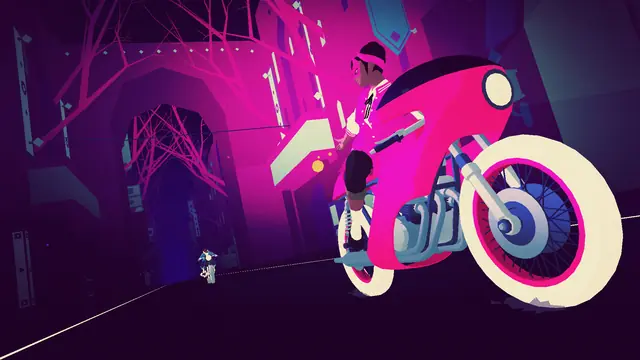
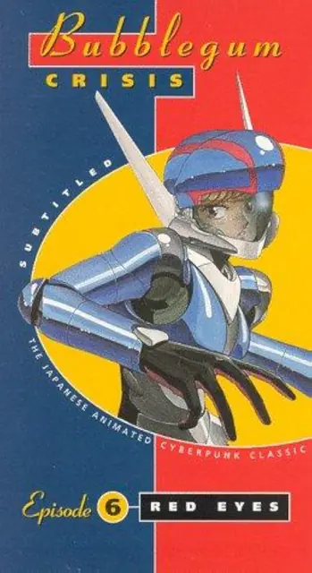
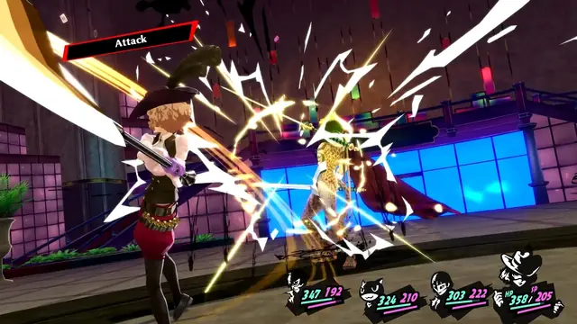
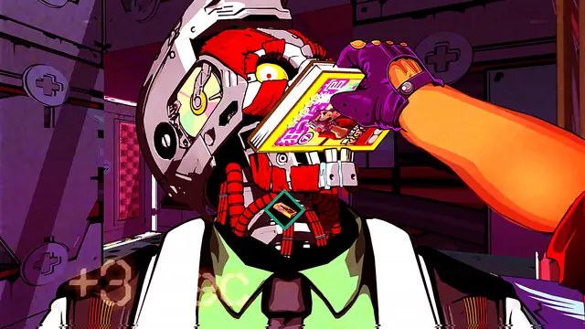
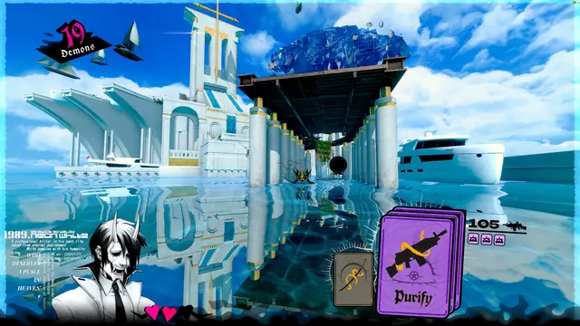

The feel
Cyberpop gives the future to pop stars. Hi-Fi RUSH follows a would-be rock star,1 one of Bubblegum Crisis's four armoured heroines already is one,2 and Hatsune Miku was drawn to suggest the future and Japanese pop culture at once.3 The mood is upbeat: Hi-Fi RUSH was pitched as a game where everything syncs to the music, colourful, funny and over the top.4
It works because it reads instantly at speed. Simogo kept Sayonara Wild Hearts to simple shapes and distinct colours because everything goes swooshing by,5 and Neon White's team found that a clean, low-detail look with lots of negative space let players read each level's main route at once.6 The music holds it together: in Hi-Fi RUSH the pipes, the lights, the interface and the hero all move on the beat.1
- fast
- cocky
- glossy
- stylish
- high-contrast
- idol-bright
Where it comes from
Bubblegum Crisis, an original video anime series released from 1987 to 1991, sent four women in hi-tech armoured suits through an early 2030s Mega Tokyo, with a biker and rock star called Pris as its main protagonist.2 Sega's Jet Set Radio, released on the Dreamcast in June 2000, pioneered cel shading and turned its 3D characters into living cartoons while the rest of the industry chased photorealism.7 Crypton released Hatsune Miku in 2007 as voice synthesis software with a character drawn for the box.3 Atlus's lead UI designer Masayoshi Suto began to treat menus as "graphical entertainment" on Persona 3 in 2006, and took the lettering of Persona 5 (2016) from the ransom-note covers of Sex Pistols albums.8 Newer games look back on purpose: Neon White borrows from Cowboy Bebop, Trigun and Black Lagoon,9 and Hi-Fi RUSH (2023) wanted the colourful, sharp and clean look of the PS2 and Dreamcast era.4
Core elements
Flat colour with no gradients
No gradients. Hi-Fi RUSH's director asked for no colour gradations and nothing that felt 3D, and had the team make the game indistinguishable from the 2D concept art of its first stage.10 Studio Trigger used flat colour in both the 2D and 3D parts of Promare so that the two would match.11
One dominant key colour
Each Persona game is built on one main colour that carries its identity, and Persona 5 kept its red distinct by dropping secondary colours everywhere except the HP and MP gauges.12 MULLET MADJACK's palette starts from red as the focal point against walls of metal.13
Animated, angled menus
Atlus treats the menu as the main event, where options unfurl with colour, movement, sound and type.8 Its menus sit at off-kilter angles and tumble onto the screen as a collage,14 and Persona 5 shifts the angle and contrast of its panels to give each piece of information context.12
Anime-style motion
Motion borrows from hand-drawn animation. MULLET MADJACK hand-adjusts its animation frames to imitate the cels of pre-digital animation,13 and Cyberpunk: Edgerunners revived a retro anime trick for slow motion, keeping each frame of a move on screen in a different shade.15
A world synced to the beat
The world moves to the music. Hi-Fi RUSH stretches attacks so they land on the beat and builds its cutscenes in musical time,10 and in Sayonara Wild Hearts the tempo of a song usually shapes the speed of its level.16
Signature colours and outfits
Characters are built to be recognised at once. Hatsune Miku's teal comes from a synthesiser, and each of the virtual singers who share her stage has a designated colour.3 Hi-Fi RUSH dresses its cast in bright, showy outfits to match their personalities,1 and Sayonara Wild Hearts builds its characters on the tarot's Major Arcana.5
How to do it
Pick one key colour
Choose one main colour to carry the game's identity, as Persona did with blue for 3, yellow for 4 and red for 5.12 Keep secondary colours out and draw the eye with central lines instead, as Persona 5 did.12
Cel-shade in flat bands
Render each mesh in three regions: a base colour and two shade colours that you choose, and the base plus one shade is enough for basic cel shading.17 Control outline width with a map, so lines that spoil the eyes can be thinned or removed.17 Another route is to run the diffuse lighting through a colour ramp, which gives a flexible toon shader.18
Stylise the lighting
Hi-Fi RUSH kept modern lighting, including deferred lights, volumetric fog, ambient occlusion, global illumination, reflections and bloom, and restyled it to suit its colourful 2D look.10 Many of the engine changes went into extra render passes of the team's own, which made engine merges less troublesome.10
Hold 60 fps at native resolution
Clean, sharp lines need pixels. Hi-Fi RUSH aimed for native 1440p on Xbox Series S and 4K on Series X, with a solid 60 fps taking priority over graphics because it is a rhythm game.10
Sync objects to the beat
Feed the beat to every object, as Hi-Fi RUSH did through its engine's event system, and adjust attack animations so they finish on the beat.10 Build cutscenes in musical time, from the first beat of a bar to the end of a bar, so play can resume without breaking the song.10
Design each menu separately
Design each menu with its own layout, such as a list, a grid or a dial, and expect to program each screen separately: Hashino says it gives more freedom but is extremely inefficient.8 For posed characters, Persona 5's team drew the layout first, then a motion designer posed a spinning 3D model and a custom tool rendered the shot in 2D.12 Test legibility early, because Persona 5's menus were impossible to read at first.14
Colour-code hazards and routes
Give dangers, helpful things, characters and vehicles their own colours and shapes, as Sayonara Wild Hearts does for maximum contrast.5 Colour-code the route as well: in Neon White, doors are always red and on the main path, and green ivy means you are going the right way.6
Cheat sheet
- Key colour
- One per game, such as red for Persona 512
- Secondary colours
- None outside the HP and MP gauges (Persona 5)12
- Frame rate
- A solid 60 fps, ahead of graphics10
- Resolution
- Native 1440p (Series S), 4K (Series X)10
- Level detail
- Low, with lots of negative space6
- Cutscenes
- First beat of a bar to the end of a bar10
- Lettering
- Ransom-note style, after Sex Pistols covers8
Do
- Sum up the look in a few words and hold to them. Hi-Fi RUSH used three: colourful, sharp and clean.10
- Let the menus lead. At Atlus the team builds ideas around a strong menu, and even the music ended up following the UI.8
- Take the colours from the music. Simon Flesser sees specific colours for specific tracks,16 and the songs turned Sayonara Wild Hearts purple, pink and blue.5
- Reward playing on the beat instead of punishing a missed one, and keep the hero's actions on rhythm either way.10,1
- Watch the anime you are drawing from. MULLET MADJACK's art director says that without real love for '80s and '90s anime you miss the shading, pacing and atmosphere.13
Avoid
- Colour gradations and anything that feels 3D.10
- Looking like just another anime game. Hi-Fi RUSH's director told his team not to make it look as if it simply came from Japan.4
- Style that costs legibility. Persona 5's first menus were impossible to read until the team kept adjusting them.14
- Fine detail on anything that moves fast. When it is swooshing by, you can't have much detail.5
Tools and tutorials
- Guilty Gear Xrd's Art Style: The X Factor Between 2D and 3D
Arc System Works on making a 3D fighting game look hand-drawn: models, textures and shaders.
- Unity Toon Shader
Official cel shading with stepped tones and outlines for Unity.
- Blender: Shader to RGB
Run a diffuse shader through it into a colour ramp to build a toon shader.18
Palette
Sampled from Neon White, Persona 5 Royal, Sayonara Wild Hearts, MULLET MADJACK and Hi-Fi RUSH. Each Persona game is built on one key colour, red for Persona 5.12
Feel the vibe
In motion
Listen
From Persona 5. Bright, fast and full of swagger, like its menus.
YouTubeMachine Girl's score for a parkour shootout through Heaven.6
YouTubeA Bubblegum Crisis song, sung in character by Pris, the Knight Sabers' rock star.2
YouTubeFrom capsule, the group where Yasutaka Nakata makes his more club-ready electro pop.19
YouTube
More references









Games
- Jet Set Radio
Its cel shading turned 3D skaters into living cartoons, and developers still borrow from it.7
- The World Ends with You
Study its Shibuya street fashion, pin badges and comic-panel scenes.
- Persona 5 Royal
Study the menus, cut-ins and screen wipes frame by frame.
- Sayonara Wild Hearts
A breakup album you can play, coloured purple, pink and blue by its songs.5
- Neon White
Clean, low-detail levels with lots of negative space, so the main route reads at once.6
- Hi-Fi RUSH
Comic-book cel shading, with pipes, lights and the interface pulsing on the beat.1
- MULLET MADJACK
VHS-era anime turned into a frantic shooter, with hand-adjusted frames that imitate animation cels.13
Film, art and more
- Bubblegum Crisis
Four women in armoured suits, with a rock star as the main protagonist.2
- FLCL
Study how it cuts to manga panels and keeps its timing fast and playful.
- Hatsune Miku
Voice software sold with a character on the box. Her teal comes from a synthesiser.3
- Promare
Flat colour across both its 2D and 3D animation.11
- Cyberpunk: Edgerunners
Night City with retro anime tricks, such as slow motion that keeps every frame on screen in a new shade.15
- Yasutaka Nakata
Perfume's producer and one half of capsule, known for buzzing electro pop.19
Sources
- 1In Hi-Fi Rush, Style is Substance
- 2Bubblegum Crisis
- 3Meet Hatsune Miku, the Japanese Pop Star Hologram
- 4How Hi-Fi Rush came together to deliver "kinetic action comedy" inspired by Edgar Wright and Shaun of the Dead
- 5Behind the Design: Sayonara Wild Hearts
- 6Neon White and designing for player creativity
- 720 years on, Jet Set Radio is still influencing developers
- 8Exuberant video game menus designed with da Vinci in mind
- 9Ben Esposito On Neon White: "If This Is For You, It's Your Favorite Game"
- 10Hi-Fi RUSH was inspired by Shaun of the Dead and Futurama
- 11Creating the Kaleidoscopic Visual Style of PROMARE
- 12Atlus Reveals The Design Secrets Behind Persona 5’s Distinctive UI
- 13Why Mullet Madjack’s retro VHS-era anime art style still stands out
- 14Persona series director says Atlus's flashy menus are 'actually really annoying' to design
- 15‘Cyberpunk: Edgerunners’: a Vibrant Ode to Retro Anime
- 16Let’s Pop: Behind the Bubblegum Dream of Sayonara Wild Hearts
- 17Getting started with Unity Toon Shader
- 18Shader To RGB Node
- 19Interview: Yasutaka Nakata